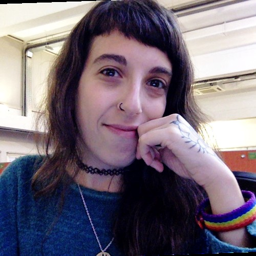
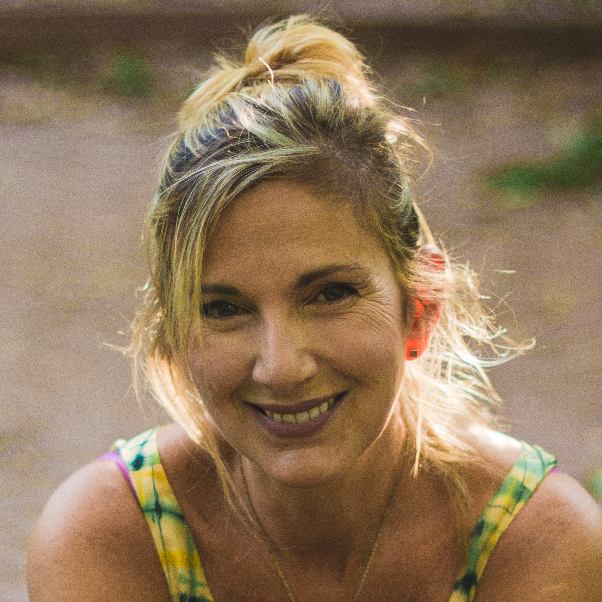

El equipo manija

Analía Antenucci
Diseñadora UX, docente y aprendiz de guitarra.
Agostina Serodio
Diseñadora UX, profe de matemática y acróbata.
Belén Cuello
Estudiante de Diseño Industrial y desarrolladora de videojuegos.

Eva Victoria
Diseñadora en comunicación visual y catlover.

Romina Tobeña
Politóloga, Neurosicoeducadora, Coach y Profe de yoga y mindfulness.